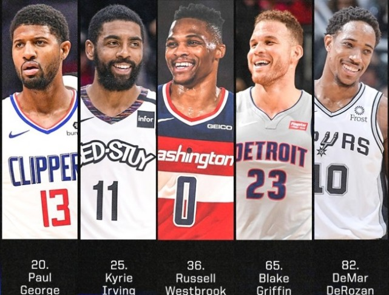
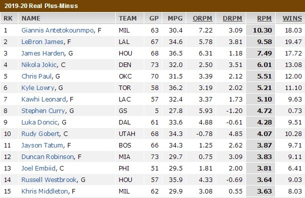
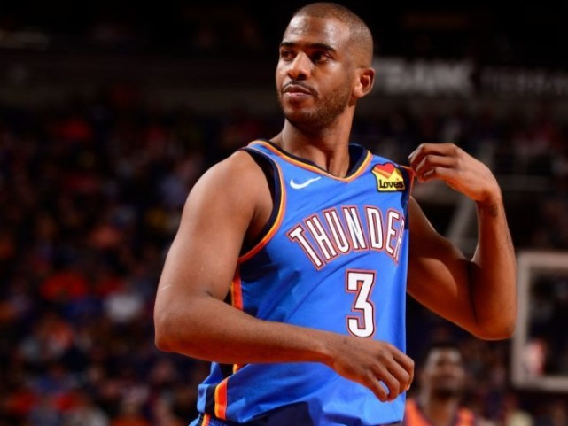

ESPN公布了一年一度的球员战力排行榜第11到50名的排名结果。和此前公布的51-100名一样，这份名单充满了争议，其中三位曾经的联盟一线巨星——拉塞尔-韦斯布鲁克、凯里-欧文以及保罗-乔治，都有超过10位的大幅下滑。
联系到之前马刺双星“被黑”——拉马库斯-阿尔德里奇仅排第95，德玛尔-德罗赞第82——不禁让人心生疑惑：
ESPN这份球员排名的标准到底是什么？它是否对NBA的“中年人”们太不友好了？这一拨曾经伴随过我们青春记忆的球员，真的到了要被后浪淘汰的危急时刻了吗？

SPN对前浪太不友好？
ESPN在2011年首度推出球员排行榜，到今年刚好是第十个年头。一开始，他们是将所有球员（500人）全部集合在一起进行大排行，现在已经将这份排名改为“百大球员榜”。
今年的排行榜，虽然前十尚未正式出炉，但也已经可以猜个大概。而这份榜单整体上给人最突出的一个印象就是：年轻球员飞速蹿升，而上了年纪的球员——包括那些传统概念中仍处于当打之年的中生代球星，被严重低估。
具体来讲，除了前文提到的几个名字在这份榜单上“跌得鼻青脸肿”外，还有像肯巴-沃克（17到48）、布雷克-格里芬（23到65）、迈克-康利（24到71）等众多例子。而年轻球星当中，杰森-塔图姆高居第11位，巴姆-阿德巴约从去年的81猛升至今年的第13，锡安、莫兰特、英格拉姆等一大波后浪也都来势汹汹。
所以难怪人们会质疑：ESPN这排名是不是太水了？它到底有多少参考价值？
要想搞清楚这个问题，首先得知道ESPN的排名标准。ESPN在这两篇排名文章（51-100、11-50）的开篇说明中，并没有给出直接的答案，只是说“我们邀请了专家小组对球员进行投票”，“ 评选者必须预测他们对每位球员在2020-21赛季常规赛和季后赛表现的期望”。
不过，在后面ESPN给出的球员基础信息当中，我们还是发现了蛛丝马迹。这些项目包括：所在球队、场上位置、上赛季排名，以及——2020-21赛季预测RPM。
RPM是个什么东西？ESPN在文章中给出了简要说明：RPM是球员在场上对球队表现影响的估算值，以百回合进攻和防守的净胜分值作为衡量的基础。是不是还是一头雾水？别着急，听我慢慢说：
我们都知道传统的数据统计包括得分、篮板、助攻、抢断、盖帽、失误、投篮命中率等等等等，在此基础之上，NBA还推出了一系列所谓的“高阶数据”，比如球员效率值（PER）、真实投篮命中率（TS%）、回合占有率（USG%）等等。但这些高阶数据，关注的仍然是球员在场上的个人发挥，而不能完全代表他对比赛胜负产生的真实影响。
于是，数据专家们绞尽脑汁，试图找到一种更能真实衡量球员场上影响力的方法，尽可能通过数据体现出那些曾经“数据无法体现的价值”。ESPN的RPM（Real Plus-Minus）就在这样的背景下应运而生，并最终成为了目前业内评判球员最重要的标准之一。

RPM的具体计算公式相当复杂，简单来说，就是根据球员在不在场时球队的净胜分差，加入队友和对手因素的考量（单纯的净胜分差数据存在明显漏洞，假如两名球员出场时间完全重合，那么两个人的净胜分差将会完全一致，但两个人的价值显然不会相同），并在此基础上考虑到基础数据的影响，最终得出的一个数字。
当然，再精细的算法，也没有办法绝对真实地体现一名球员在瞬息万变的篮球场上所起到的综合作用，RPM所做的也只是尽可能接近“真相”。事实上，就连ESPN自己，也在不断对RPM的算法进行着调整。
但不管怎样，这项数据，绝对在这份球员排行榜的评比中扮演了重要作用，这也是最终排名结果和人们印象有很大出入的核心原因。因为对绝大多数球迷来说，判断一名球员实力的标准，主要还是他的基础数据，比如一场砍了多少分？场均能抓几个篮板？三分命中率有多高等等。但很多时候，基础数据反映的东西和RPM并不一致。
比如昨天对ESPN将自己排到第82位出离愤怒，直接@到对方，并附上“小丑”和“狗屎”表情的德罗赞，上赛季场均虽有22.1分5.5个篮板5.6次助攻贡献，21.66的效率值也排到了联盟第24位，但这些针对的都是他的个人发挥。在ESPN的RPM数据体系当中，他的得分只有-1.39，在联盟所有球员当中排到了第288。
当然，RPM会相当程度上受到球队战绩的影响，球员一旦换个环境，RPM数值也有可能发生质的变化。而这份榜单是对2020-21赛季的预测，且是由专家组投票决出，必然会掺杂主观因素。所以，它也绝不等同于直接的RPM排行榜，也正因如此，德罗赞虽然上赛季RPM数据如此之惨，还是排进了前一百名。

他们为啥可以逆势上扬？
了解了ESPN球员排行榜的评判标准，就不难理解为啥会有一些我们印象中的巨星排名如此之低了。比如前面提到的韦少、欧文、乔治、格里芬等等，都存在各种自身或环境的问题，才因此不被看好。
而同样的道理，也不是所有上了年纪的球员，都注定晚景凄凉。如果仔细查看这份排行榜，你就会发现，也有一些老将逆势上扬，对年龄“说不”。
最典型的例子莫过于克里斯-保罗，这位已经35岁的老将在去年的ESPN排行榜上位居第32，但由于上赛季在雷霆出色的带队表现，重新杀回到第15，上升了17个排名！
如果了解了RPM的定义以及它在这份榜单中所扮演的作用，你对这样的结果就不会感到奇怪了。实际上，保罗作为NBA最优秀的球场指挥官之一，在其整个职业生涯里，个人RPM数值一直在联盟中名列前茅。只是在2018-19赛季，因为生病的影响，加上和哈登分享球权，他只打出了2.49的RPM，排名联盟第24。而刚刚过去的2019-20赛季，保罗的RPM高达5.51，排名联盟第5！
新赛季，虽然保罗更换了球队，年龄也又大了一岁，但ESPN给他的预测RPM值仍然有3.6。这个数据放在上赛季，可以排到联盟第16位，如果再去掉第5名的保罗自己，刚好是第15，和他在ESPN实力榜上的位置完全一致。
类似的情况还发生在了吉米-巴特勒身上。巴特勒2018-19赛季经历森林狼逼宫风波，后来被交易到76人给恩比德和西蒙斯打下手，最终的RPM只有1.26（联盟第72），虽然去年夏天转会热火当老大，预测排名仍然只有21。
但上赛季，巴特勒和热火的表现超出预期，3.08的RPM升到联盟第23位，加上总决赛令人印象深刻的发挥，这才在最新的球员势力榜上，升到了第12位。同时，有部分球迷认为巴特勒的排名还可以更高，但实际上他并未进入联盟前十。这应该也是因为RPM的限制。
另外，根据目前公布的排名，我们可以推测出EPSN球员榜前十的球员，依然是詹姆斯、杜兰特、库里、哈登、莱昂纳德、字母哥等“中、老年”球员，由此可见，只要自身实力足够过硬，无论是高阶数据，还是年龄问题，都无法将你打败。